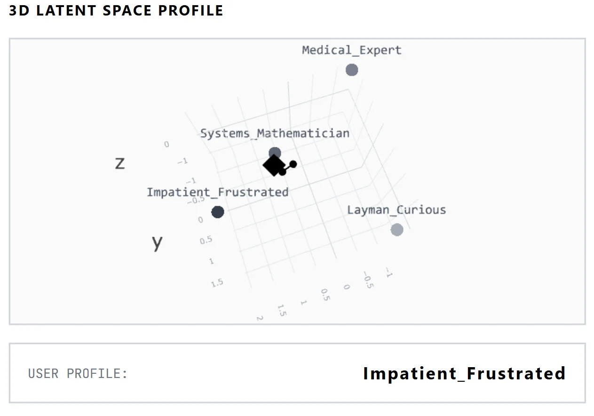

Timmy & Tommy Cognitive Architecture
Timmy and Tommy are retrieval-augmented generation (RAG) assistants which integrate neural networks (RNNs) for fast and cheap persona classification and emotional state management. Through this resource management, the system is able to run the QDrant DB graph traversal and state detection on a resource-constrained Azure B2als v2 virtual machine.

sequenceDiagram
participant User
participant FastAPI Backend
participant Tommy (Cognitive RNN)
participant Timmy (Emotional RNN)
participant QDrantDB
participant Groq LPU (LLM)
User->>FastAPI Backend: Submits Query (the execute command)
FastAPI Backend->>QDrantDB: HNSW Graph Traversal
FastAPI Backend->>Tommy (Cognitive RNN): Extract user Persona
FastAPI Backend->>Timmy (Emotional RNN): Calculate model emotional state (Only Timmy)
Tommy (Cognitive RNN)-->>FastAPI Backend: Persona Coordinates (3D PCA)
Timmy (Emotional RNN)-->>FastAPI Backend: Sarcasm, Brevity, Pedantry, etc.
QDrantDB-->>FastAPI Backend: Top-K Vector Matches and Confidence
FastAPI Backend->>Groq LPU (LLM): System Prompt (Facts + Persona)
Groq LPU (LLM)-->>User: Streamed Response and Telemetry Data
1. Industry Performance Benchmarks
To validate the RAG methodology, the system is tested against the YLab Bridge Benchmark datasets.
| Dataset | Accuracy | Methodology / Notes |
|---|---|---|
| MedQA (USMLE) | ~68.3% (870/1273) | Zero-Shot CoT + Europe PMC Vector Injection. (Base Llama 3.1 8B scores
~68.9%).
The decrease in performance is due to the answers being memorized in the Base Llama 3.1 8B model, by providing it with dense medical texts, the model's behavior is modified, leading to it no longer providing the memorized answer. To properly test this, I will be using an early instruct model from before the popularization of the MedQA dataset to perform the tests so the real results of the RAG architecture can be found. |
| MEDIQA 2019-RQE | 100.00% (5/5) | Tested on Example dataset; evaluates boolean clinical QA logic. |
Reference: Wu, J., Gu, B., et al. BRIDGE: benchmarking large language models for understanding real-world clinical practice texts. Nature Biomedical Engineering (2026).
2. Cognitive RNN and FastAPI Architecture
User queries are handled by a FastAPI backend that orchestrates the execution flow before reaching the LLM. Instead of burning token bandwidth and latency on a larger LLM to classify user intent, the backend routes the query through two discrete Recurrent Neural Networks (100 KB footprint each) that execute locally on the shared CPU server.
Typically, emotional states and user personas are calculated using transformers (which pick out the relevant text from the chat history to determine these items) and weaker models, which output the information before it is injected into a stronger model's prompt for the real response. RNNs are no longer used because they cannot capture as much complexity as the two methods above. However, because I am compute constrained (so I cannot run a transformer) and API rate limited (so I cannot pass it into a weaker model). For this reason, I used custom RNNs, which are 100 KB each, run practically instantly on the virtual machine, and were freely available.
- Backend Routing: The FastAPI server first queries the QDrant vector database using the user's input. Simultaneously, it passes the input to both the Tommy and Timmy RNNs to extract persona coordinates and calculate the simulated emotional state.
- User Persona RNN (Tommy): Maps the user's semantic intent into a 64-dimensional latent space. Principal Component Analysis (PCA) reduces this to a 3D coordinate representing the user profile (this is what gets displayed on the website). The nearest pre-calculated persona vector is assigned, determining what is written in the response.
- Emotional State RNN (Timmy): The RNN updates the current "mood" as the conversation progresses. Depending on the calculated emotional state, specific response guidelines are injected into the prompt, leading to different responses. Something important to note is that the more strongly instructed models (including the ones that are freely available on Groq at the moment unfortunately), do not respond as well to these prompt injections for certain behavior. For this reason, the effect of the emotions is not as pronounced as it was with the uninstructed base Llama 3.1 8B that was used previously.
- Prompt Injection: The FastAPI backend combines the retrieved QDrant DB facts, the user persona context, and the emotional state constraints into a dense system prompt, which is finally sent to the Groq LPU for generation.
Training Methodology and Data Generation
To prevent me from needing to spend a long time writing scripts for particular personas, how the
different personas speak was emulated by Chat GPT 4-mini. Although this did result in unnatural
behavior (the results are what the model thinks a medical expert would sound like instead of what
they actually sound like), it was good enough for this projects purposes.
After these scripts were generated, I passed them through a PyTorch feature extractor
(S-PubMedBert-MS-MARCO) to generate 64-dimensional vectors of each persona. Which are then used to
calculate the user persona vector. This then gets fed into the RNN to update the state of the user.
Here is the process that I used for creating this:
- The OpenAI API was used to simulate conversational datasets for specific personas (e.g., medical professional vs. mathematician).
- The dataset was passed through an embedder to create latent representations.
- Triplet Loss was applied to cluster similar conversational vectors (e.g., medical) while pushing disparate vectors away (e.g. mathematician).
- At runtime, user inputs are mapped into this trained latent space; the RNN takes these vectors and generates a user persona. Depending on its output, different prompt injections are triggered resulting in tailored responses.
3. HNSW Vector Traversal
The context and research paper injection comes from the in-memory QDrant database. It is stored on the virtual machine to prevent external storage costs. The search algorithm relies on a Hierarchical Navigable Small World (HNSW) graph, which reduces query complexity from $O(n)$ to $O(\log n)$.

API Information
With every response Groq API also returns the following metrics on the speed of response generation.
| Metric | Observed Value | Implication |
|---|---|---|
| Time To First Token (TTFT) | 0.61 s |
Includes local HNSW traversal + API network latency |
| Generation Throughput | 441.5 T/s |
Raw Groq LPU tensor output velocity |
| Prompt Processing Speed | 17,621 T/s |
Speed at which RAG context is digested |
| DB Fetch Latency | 108 ms |
Time to return top-k matches from QDrantDB |
4. Cost Breakdown
More detailed cost information can be found on the Github Repository linked at the top of this page.
| Component | Cost |
|---|---|
|
Data Acquisition (Europe PMC and Wikipedia) Scraped locally via CPU. |
$0.00 |
|
Model Training and Generation RNNs (\$0.00, trained locally), NER Model ($5.78, see also BioNERBERT-CRF project), Synth Persona Gen ($6.47), Timmy Personality Gen ($12.89, multiple days of ChatGPT API quota), Embedding Calc ($0.00, freely provided model on Hugging Face). |
$19.36 |
|
Vector Storage (QDrantDB) Stored locally in-memory (~300 MB). |
$0.00 |
|
VM Hosting (Microsoft Azure) B2al-v2 server. Automated shutdown outside 9AM-6PM weekdays saves ~40% costs. |
$16.20 / mo |
|
Live LLM Inference (Groq LPU) Utilizes Qwen3-32b, Llama-4-Scout, and Llama-3.3-70b via API. |
Free Tier |
5. Safeguards
- Rate-Limiting (SlowAPI): Caps requests at 15/minute to prevent a denial of service attack preventing people from using it because of Groq API limits.
- Virtual Memory (Swap): The PyTorch models initially caused Out-Of-Memory crashes on the 2GB RAM VM. To allow the program to run without needing to upgrade the virtual machine, I used some of the SSD as RAM, which is significantly slower but ensures it doesn't crash. (I did upgrade the VM afterwards when I switched to Microsoft Azure though!)
6. Future Roadmap
- Multi-Shot Prompting: Using a weaker model to generate more prompts to search in the vector database for to create a more complete response. For example, instead of just providing drug information when the user asks about a drug, the multi-shot prompting would also find information on the effects of the drug and other details. This is already partially implemented (and deployed), but I want to make a better stop criteria for when it stops searching for new queries.
- CPU-Based Reranking: Implementing a cross-encoder (ms-marco-MiniLM) to re-score QDrantDB retrievals to maximize the relevance of the sources. This is already implemented and deployed, you can also see the labels of the cross-encoder when you look at the source box below every response.
- Safety Layer: A new RNN to definitively reject queries unrelated to the retrieved domain context. This isn't really to prevent anyone from getting any secret information, but more so I can experiment with implemnting it.
- Chat Authority Layer: Granting the Emotional RNN the autonomous ability to terminate the session if the simulated "annoyance" reaches critical thresholds. I think if you're using Timmy instead of Tommy, you're in it for the emotional layer, and I think emotions without authority make it feel very fake so that is something I want to work on.